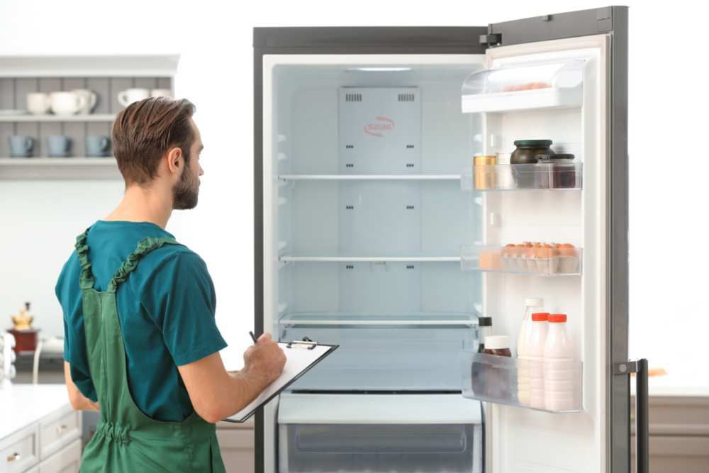

Tủ lạnh là thiết bị hoạt động xuyên suốt 24/24 trong gia đình. Bất kỳ một sự cố nhỏ nào như tủ kém lạnh, đóng tuyết hay rò rỉ nước đều có thể khiến toàn bộ thực phẩm dự trữ bị hư hỏng, ôi thiu và gây mùi khó chịu.
Đừng lo lắng! Điện Lạnh Bách Khoa cung cấp dịch vụ sửa chữa tủ lạnh cấp tốc tại nhà. Đội ngũ thợ tay nghề cao chuyên xử lý các dòng tủ từ cơ bản đến cao cấp (Inverter, Side by Side), đảm bảo tủ hoạt động ổn định trở lại trong thời gian ngắn nhất.
📞 0559763681 - BẤM GỌI THỢ NGAY Hoặc Hotline: 0367274152Hãy ngắt điện hoặc liên hệ kỹ thuật viên ngay nếu bạn nhận thấy tủ lạnh có các biểu hiện bất thường sau:

Kỹ thuật viên kiểm tra bo mạch và hệ thống làm lạnh của tủVới trang thiết bị hiện đại, chúng tôi tự tin xử lý dứt điểm các pan bệnh khó nhất:
Chúng tôi cung cấp dịch vụ cho mọi kiểu dáng tủ: Tủ mini, tủ 2 cánh trên/dưới, tủ Side by Side, tủ French Door của các hãng:
Bảo vệ thực phẩm nhà bạn - Có mặt sau 20 phút
HOTLINE: 0559763681